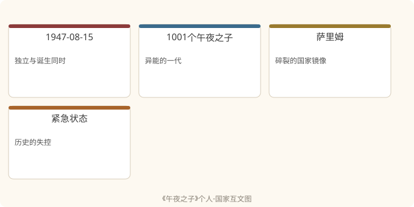

午夜之子
一、基本信息
| 作者 | 萨尔曼·鲁西迪 |
|---|---|
| 成书/出版 | 1981年出版并获布克奖（Britannica：Rushdie received the Booker Prize in 1981 for Midnight's Children） Salman Rushdie — Encyclopaedia Britannica（百科全书） |
| 国别/地区 | 英国 |
| 时代 | 现当代 · 20世纪 |
| 体裁 | 长篇小说 |
| 语言 | 英语 |

《午夜之子》个人-国家互文图（主题·结构图）
二、创作背景
Britannica：a fable about modern India, was an unexpected critical and popular success（关于现代印度的寓言）。
设定：1947年8月15日午夜独立之刻出生的萨里姆与印度‘同龄’——1001个午夜之子各具异能（通说）。
三、内容脉络
萨里姆的鼻子能读心、与湿婆（另一午夜之子）被调换的婴儿身份错位（通说）。
家庭史与国家史互文：分治、孟加拉紧急状态（通说）。
四、主要人物表
| 人物 | 身份 | 说明 |
|---|---|---|
| 萨里姆·西奈 | 午夜之子 | 叙述者·telepathy（通说） |
| 湿婆 | 另一个孩子 | 膝盖战神（通说） |
| 帕德玛 | 未婚妻 | 听故事的人（通说） |
五、主题与艺术特点
- 个人=国家： bodies as metaphors of the nation（通说）。
- 记忆与不可靠叙述：『我搞错了很多事』式忏悔（通说）。
- 英印混杂语言与口述传统（通说）。
六、影响与评论
- Britannica：布克奖（1981）、布克中的布克（1993）、布克奖40年最佳（2008）——布克奖史上的『最佳之最佳』。
Salman Rushdie — Encyclopaedia Britannica（百科全书） - Britannica：拉什迪为关于言论自由与审查辩论的中心人物（a central figure in debates about free speech and censorship）。
Salman Rushdie — Encyclopaedia Britannica（百科全书）
七、阅读建议
难点
- 印地/乌尔都语词汇与印度史年表。
- 不可靠叙述——记住『讲述者会出错』是设计。
- 刘凯芳译本（上海译文出版社，通说待核）。
可与《百年孤独》对读：魔幻现实主义的两种谱系。
八、待核实
- 三届布克特别奖细节（Britannica 已载1993/2008）核对。
- 印度紧急状态（1975—77）史实章节待核。
- 中译本信息待核。
本页主要来源
萨尔曼·鲁西迪的其他收录作品：午夜之子